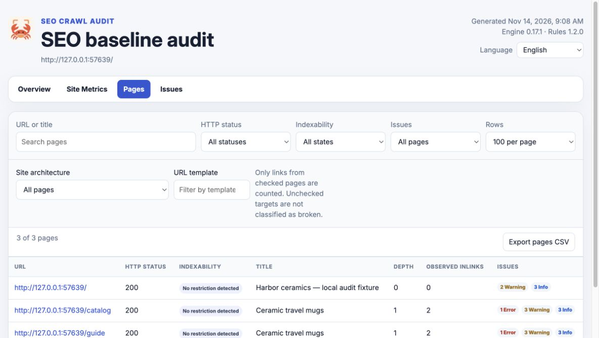
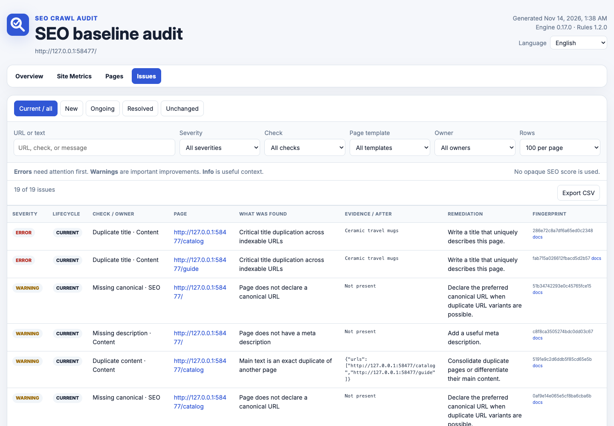
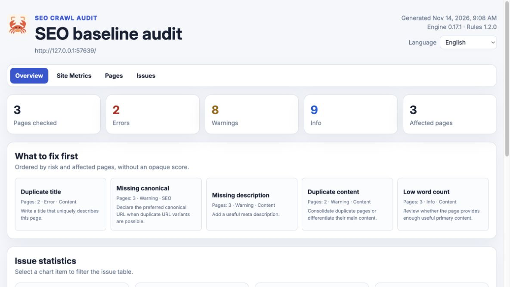

Give every finding
a paper trail.
Crawl your site, see the affected URLs and keep the evidence. Run it from your terminal or connect the same engine to your coding agent.
Preview agent prompt
Act as my SEO audit agent using SEO Crawl Audit. Respond in the language I use in this conversation. If I have not supplied the target website URL, ask for it before making requests. 1. Adapt to your actual client and capabilities. - Codex: follow applicable AGENTS.md instructions in the accessible project and use the installed SEO Crawl Audit plugin/skill and connected MCP tools when available. - Claude Code: follow applicable CLAUDE.md and project instructions, then use the installed SEO Crawl Audit plugin/skill and connected MCP tools when available. - Claude Desktop: use the connected SEO Crawl Audit MCP extension and its configured workspace. Do not assume you have a terminal or direct access to project files. Discover the tools and read the available SEO Crawl Audit skill instructions before using them. Do not claim an integration is installed without checking. Keep artifacts inside the configured project workspace; ask for a missing workspace only if it is needed. 2. Plan, then audit. Prefer the native MCP workflow: discover seo_audit_plan, seo_audit_scan, seo_audit_issues and seo_audit_report (client prefixes may differ). Inspect the crawl plan, start with a 100-page budget, respect robots.txt, and use the returned artifact paths. Page through the issue results rather than assuming one response contains every finding. If no native integration is available but a terminal is, use this fallback after replacing the URL: npx seo-crawl-audit@0.17.2 scan <WEBSITE_URL> --pages 100 If neither route is available, explain the missing connection and point me to https://melnixdev.github.io/seo-crawl-audit/plugins/ instead of pretending to run an audit. 3. Investigate the evidence. Review collected metadata, canonicals, indexability signals, internal links, hreflang and structured-data findings. Report affected URLs and evidence, separate confirmed problems from items needing manual investigation, and state checked-page counts, crawl limits and inaccessible pages. Do not claim full coverage, Google indexing or rankings from a bounded crawl. 4. Deliver an actionable result. Link the local HTML report and JSON snapshot using the artifact access your client actually supports. Summarize the most important findings, then propose a prioritized fix plan with owners, affected pages and verification steps. If comparable saved runs exist, use the available comparison/history tools to explain changes without needlessly crawling again. Keep credentials and personal data out of shared outputs. This request is for an audit and plan. Do not edit or deploy the website as part of it.
npx seo-crawl-audit@0.17.2 scan https://example.com/ --pages 100Node.js 20.19+ required. Free and open source.
Open the report.
Follow the URL.
Start with crawl coverage, then move into pages and findings. Every issue includes evidence, its affected URL and a next step you can review.

A useful audit leaves a trail.
- Plan a bounded crawlDiscover robots.txt and sitemap URLs. Choose a page budget before making requests.
- Inspect the evidenceReview titles, metadata, canonicals, links, hreflang and structured-data findings by URL.
- Check the next deploymentSave JSON snapshots and compare new, ongoing and resolved findings with comparable coverage.
Keep the details.
Share the HTML.
Filter findings by severity, rule or owner. Open a page to inspect its collected metadata and links. Keep the snapshot for another check, or share the generated report with your team.
A report is a local artifact you can reopen. Reading it does not require an SEO service account.


The same engine.
Your own workflow.
Use the CLI for a one-off investigation, a GitHub Action for regression checks or eight MCP tools inside your agent workflow.
- Versioned JSON snapshots for repeatable comparisons
- HTTP crawling by default; optional Playwright rendering
- Explicit workspace boundaries for local MCP artifacts
See a report
in motion.
A short, silent preview assembled from real browser captures: explore the overview, pages, site metrics and issues.
This capture sequence uses deterministic reference data with synthetic history. It demonstrates report behavior, not Codex or Claude installation.
Local by design.
Clear about limits.
The crawler runs on your machine and requests your chosen site. Snapshots and reports stay in your configured directory. Your AI client handles tool results under its own policies.
The crawler respects robots.txt by default. Optional JavaScript rendering requires Playwright and Chromium installed in your workspace.
Evidence needs context
Findings are checks and heuristics to investigate. A crawl cannot confirm Google indexing, rankings, traffic or complete site coverage. Review scan limits and use Search Console when you need indexing evidence.
Know what you install
Native ZIP and MCPB downloads are separate from npm. Read the client verification notes before installation. No marketplace approval or official platform endorsement is implied.
Put your next fix
to the test.
Start with a small crawl. Save the evidence. Check again after a change.